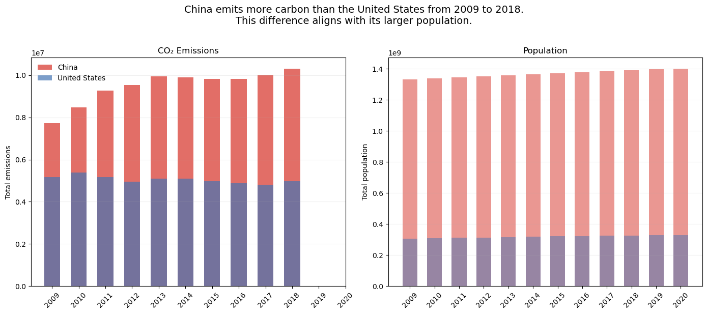
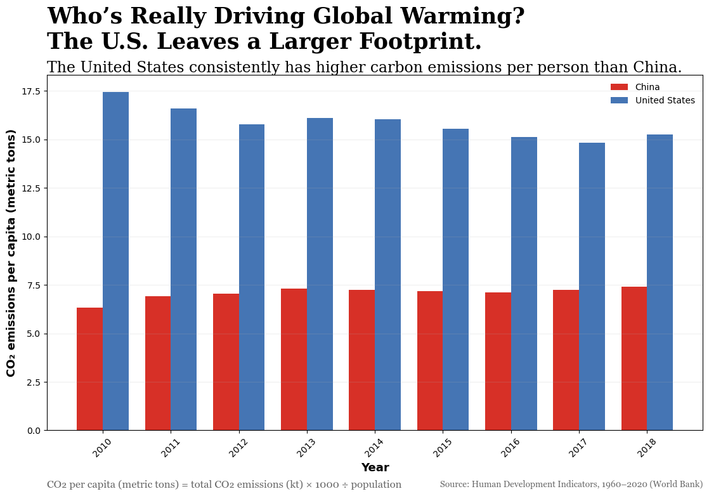

Proposition: Among the top developing and developed economies, China emits more carbon to catch up with the United States.
FOR the Proposition

Design Decisions and Rationale:
-
Y-Axis (2): Share of global CO₂ emissions (%)
We began with total CO₂ emissions, as they reflect the overall scale of each country’s contribution to global warming. However, total values alone lack context, so we transformed them into each country’s share of global emissions by dividing by the world total. This places each country’s emissions in a global context and makes it easier to compare their relative contributions. It also aligns with how global warming operates at a global level, where total emissions matter overall. The transformation is clearly defined and applied consistently across all years and countries, making it transparent how the data is processed. -
X-Axis (1): Year (2010–2018)
We included a time range to examine whether the pattern remains consistent over time. We focused on the recent decade, using data from 2010 to 2018 based on availability. Showing multiple years provides context within this time frame and helps demonstrate that the observed difference is not based on a single year. -
Mark (2): Grouped bar chart
We used a grouped bar chart to compare the two countries side-by-side within each year. This layout enables direct comparison within the same time frame, making differences immediately visible without additional interpretation. This is effective for displaying each country’s share of global emissions, where comparing relative contributions is important. We also considered using a stacked bar chart or a line chart, but these options make year-by-year comparisons less direct or introduce unnecessary visual complexity. In contrast, the grouped bar chart keeps the comparison clear and focused within each year. -
Color (2): Red (China) and Blue (U.S.)
We used red for China and blue for the United States, based on the most recognizable colors from their national flags. This makes the categories easy to distinguish without relying too much on the legend. The contrast also helps separate the two clearly, and we did not use color in a way that could mislead the viewer. -
Title (1): The Cost of Catching Up: China Drives More Warming
We chose this title to frame the comparison between China and the United States through the idea of “catching up,” which implicitly introduces a contrast between a developing and a developed country. The word “cost” adds a negative framing, suggesting that higher emissions are a downside associated with this difference. However, this is based on an observed pattern in the data rather than a causal relationship, and the chart does not provide evidence to explain why this difference exists. This framing directs attention to the fact that China accounts for a larger share of global emissions than the United States.
This interpretation based on global share is reasonable because it reflects each country’s overall contribution to total emissions, which is directly related to the scale of impact on global warming. However, emissions can also be interpreted in other valid ways, as different measurements emphasize different aspects of impact. Here, we focus on carbon emissions as one way of measuring contributions to global warming, which may lead the audience to overlook other important factors, even though carbon emissions are a well-known driver of global warming. -
Annotation (2): Definition of “global share.”
We included a definition of “global share” below the chart to explain how the metric was calculated. Providing this context makes the transformation more transparent. It also helps viewers understand how the percentages should be interpreted.
AGAINST the Proposition

Design Decisions and Rationale:
-
Y-Axis (2): CO₂ emissions per capita (metric tons)
We began with total CO₂ emissions, but normalized them by population to compute per-capita values. This transformation accounts for differences in country size and allows for more comparable measurements across countries. By expressing emissions on a per-person scale, it shifts the focus from total output to average individual intensity. As it is clearly defined and applied consistently across all years and countries. -
X-Axis (1): Year (2010–2018)
Same as above. -
Mark (2): Grouped bar chart
We used a grouped bar chart to compare the two countries side-by-side within each year. This layout supports direct comparison within the same time frame, making differences between countries immediately visible. We also considered using a stacked bar chart or a line chart, but these options make year-by-year comparisons less direct or introduce unnecessary visual complexity. In contrast, the grouped bar chart keeps the comparison clear and focused within each year. This is particularly useful given the shift in measurement to per-capita values, where direct comparison between countries is important. -
Color (2): Red (China) and Blue (U.S.)
Same as above. -
Title (1.5): Who’s Really Driving Global Warming? The U.S. Leaves a Larger Footprint.
We chose this title to highlight that the United States has higher emissions per person than China. Framing the question as “who’s really driving global warming” shifts the focus from total national emissions to individual-level responsibility. This change in perspective makes countries with higher per-person consumption appear more impactful, leading to a different interpretation compared to the first visualization.
This interpretation is reasonable when comparing individual responsibility, since per-capita emissions reflect how much each person contributes on average. At the same time, global warming can be understood from both national and individual perspectives: total emissions reflect overall national responsibility, while per-capita emissions capture individual responsibility. As a result, different measurements can lead to different interpretations of responsibility. -
Annotation (2): Clarifying per-capita measurement
We included labeling that makes clear the metric is measured per person. This helps viewers interpret the scale correctly and understand how the values differ from total emissions. Providing this context improves transparency.
Final Reflection
This project was more interesting and challenging compared to the previous one. It took us some time to explore different datasets before settling on our final proposition. We chose to focus on CO₂ emissions because of their connection to global warming and ongoing discussions about climate responsibility. We also focused on China and the United States, since they are two of the largest contributors to global emissions but represent different stages of development. This contrast allowed us to explore how the same data could lead to different interpretations.
After settling on our proposition, designing the supporting visualization was relatively straightforward, since we could construct a metric that aligns with our argument, such as turning each country’s total emissions into its share of global emissions. The more challenging part was creating the opposing visualization, which required reframing the same data while keeping it consistent. What surprised us most was how easily the message could change with small design choices. In our case, the first visualization uses global share to highlight China’s larger contribution, while the second uses per-capita emissions and makes the United States appear more responsible. Simply shifting from a national to an individual perspective led to almost opposite conclusions. Titles also played an important role in shaping how viewers interpreted the data.
In terms of ethical analysis and visualization, we now understand that it is not just about using accurate data, but also about how framing, transformation, and wording shape the story being told. In our case, both visualizations are based on the same dataset but lead to different conclusions by emphasizing different aspects. At the same time, both views leave out other factors that could also matter, such as population size, development stage, historical emissions, energy structure, and consumption patterns. A more complete visualization could include more of these factors, but it might also become too informational and harder for viewers to interpret clearly. We think an acceptable persuasive visualization makes its perspective clear and does not hide its assumptions, while a misleading one pushes a conclusion without enough context or alternative interpretations. However, it is difficult to draw a strict boundary between the two, since many design choices fall in between. Because of this, we believe ethical visualization requires transparency and an awareness of how easily interpretation can be influenced.